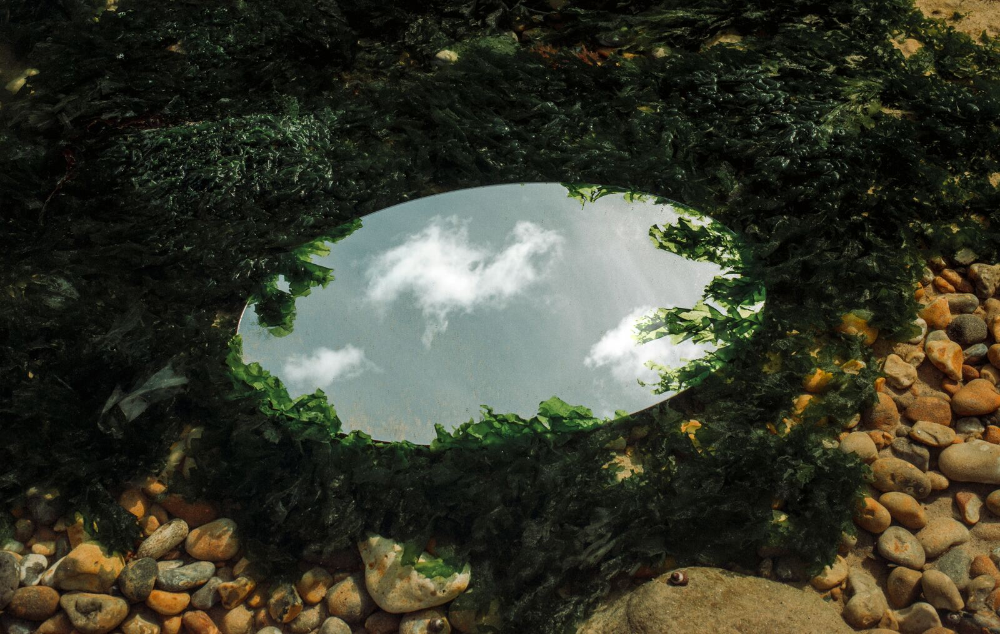
Interactive ReflectionThe Mirror Exhibit
Every reader brings assumptions to a text without realizing it. This exhibit reveals the interpretive lenses that shape how you read and asks what changes when you try another.
Enter →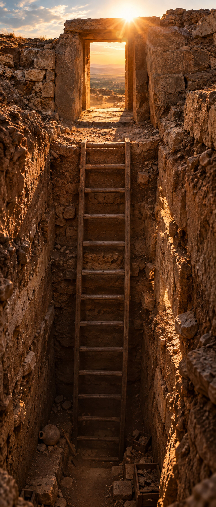
Begin the Descent
Finding New Meaning in Ancient Stories
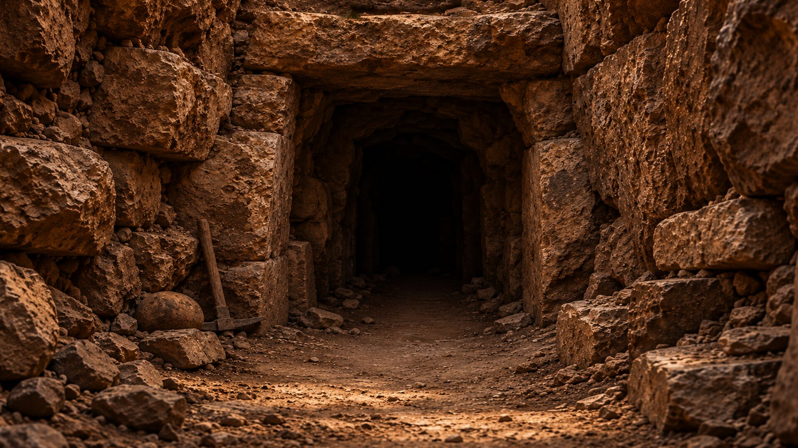
The Bible emerged from times and places very different from our own. Its authors and earliest audiences lived within cultures shaped by assumptions about gods and kings, temples and idols, identity and land, and the structure of the cosmos. Much of what was familiar to them is now foreign to us.
A World Rediscovered is my attempt to explore the distance between these texts and ourselves through historical inquiry, interpretive reflection, and creative expression.
The journey begins with ancient Israel and the Hebrew Bible. From there, it follows the evidence into the wider ancient Near East, through the literature and thought of the Second Temple period, and into the New Testament.
The question is not simply what these texts mean to us, but what they may have communicated in the settings where they were heard, written, preserved, edited, and received.
I invite you into the worlds that shaped these texts through a series of creative and interactive exhibits. Each offers a different way to explore the history and meaning of these writings, drawing on the work of scholars who study the cultures, languages, and material remains of the biblical world.
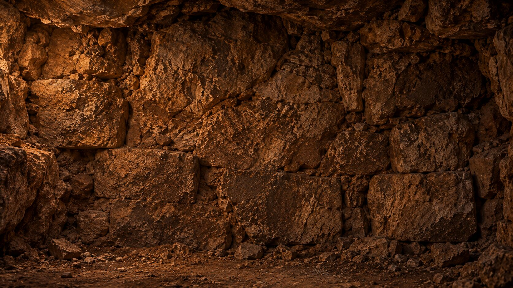
Each exhibit opens a different window into the places, stories, beliefs, cultures, and ideas that shaped the biblical world. Choose any exhibit to begin, explore at your own pace, and move through the collection in whatever order interests you most.

Interactive ReflectionEvery reader brings assumptions to a text without realizing it. This exhibit reveals the interpretive lenses that shape how you read and asks what changes when you try another.
Enter →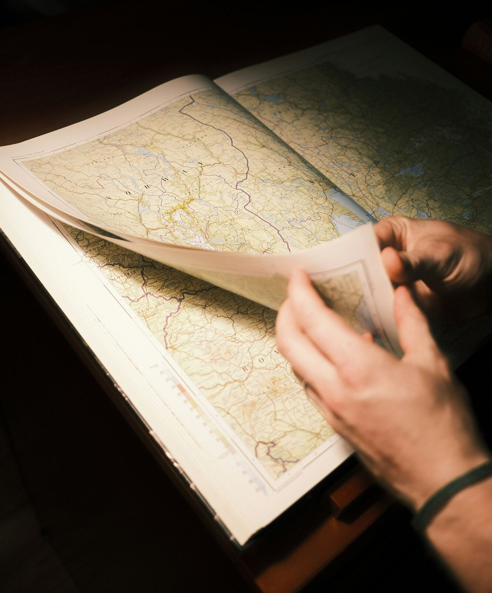
02Trace the discoveries that reshaped our understanding of the biblical world. Explore where and when ancient texts, artifacts, and archaeological sites were uncovered—and how each discovery changed what scholars could see in the Bible.
Enter →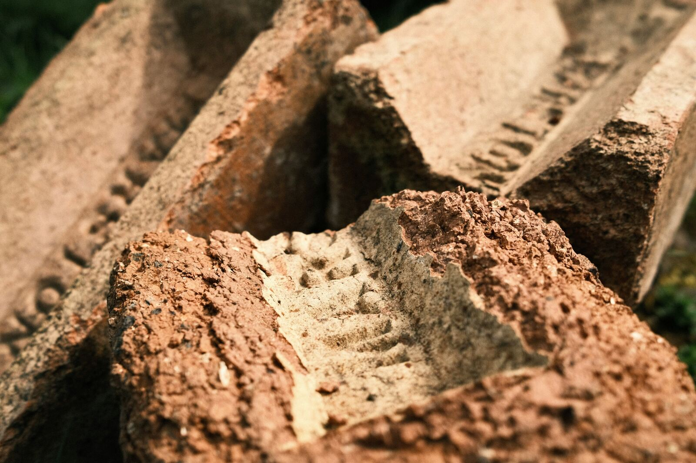
Comparative ReadingBiblical texts were written within a larger ancient Near Eastern world. Set them beside related texts from neighboring cultures and the similarities come into view, along with the places where biblical writers chose to tell things differently.
Enter →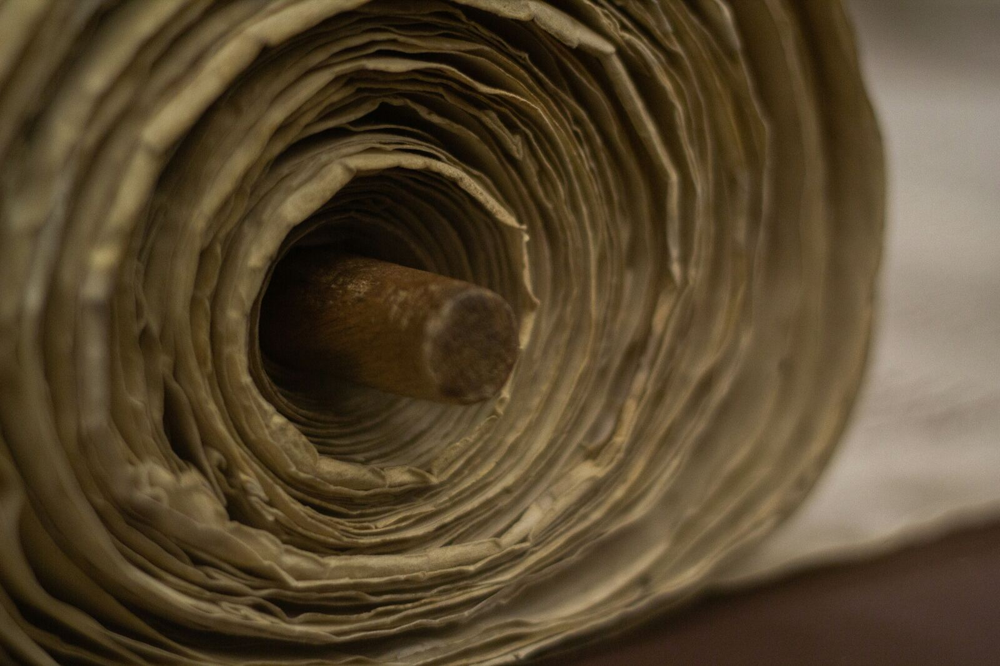
04An imagined letter from the ancient author. A first-person window into the world a biblical writer actually inhabited — its politics, worries, and everyday concerns.
Enter →The sources, browsable like a shelf. Every named scholar and traceable text referenced throughout this project, gathered in one place for further study.
Enter →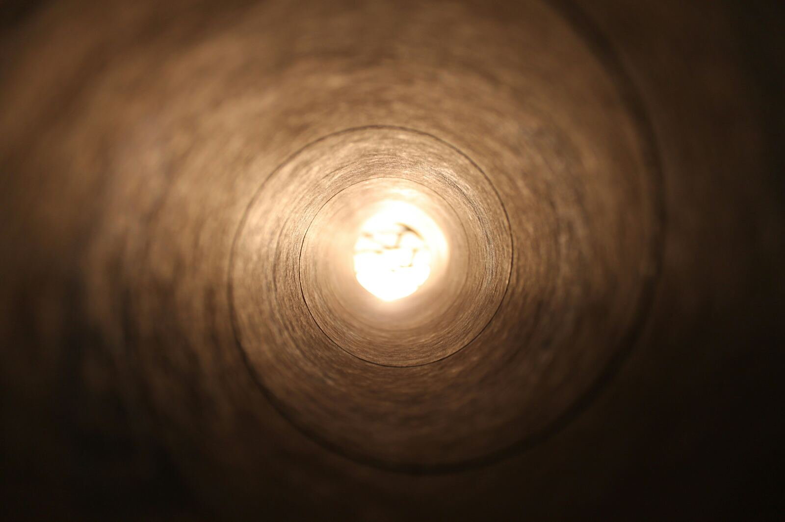
06Original music and poetry, in response. Creative work composed for this project that responds to the ancient material rather than simply explaining it.
Enter →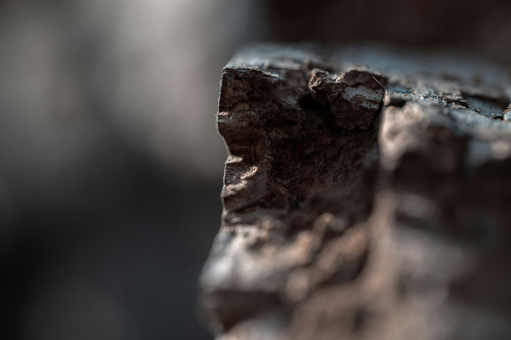
07Where even the experts don't agree. A look at the open questions and competing interpretations serious scholars are still actively debating.
Enter →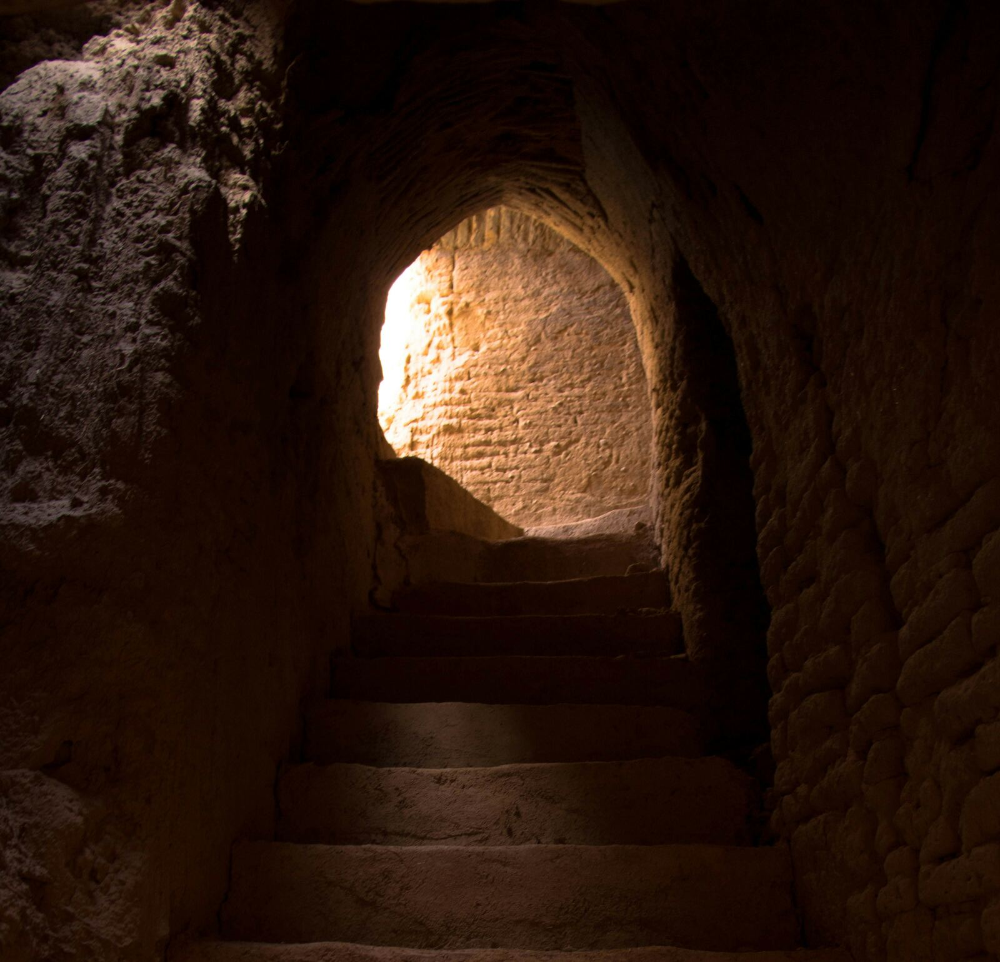
08How much of this world can you place? A short interactive quiz testing what you've picked up about the ancient Near East and its biblical parallels.
Enter →